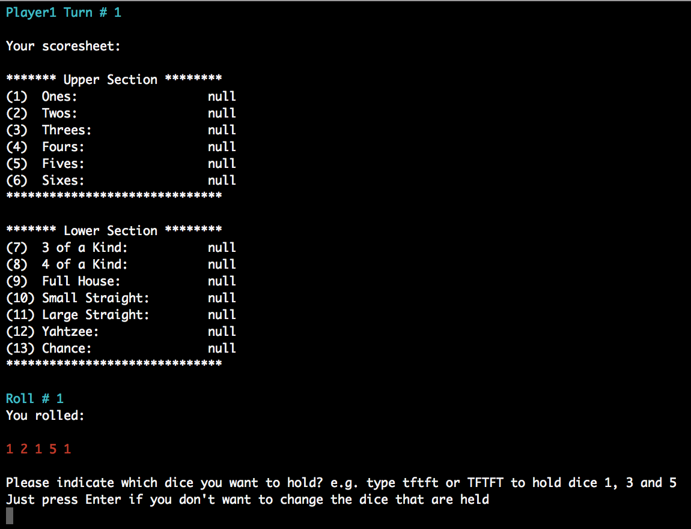
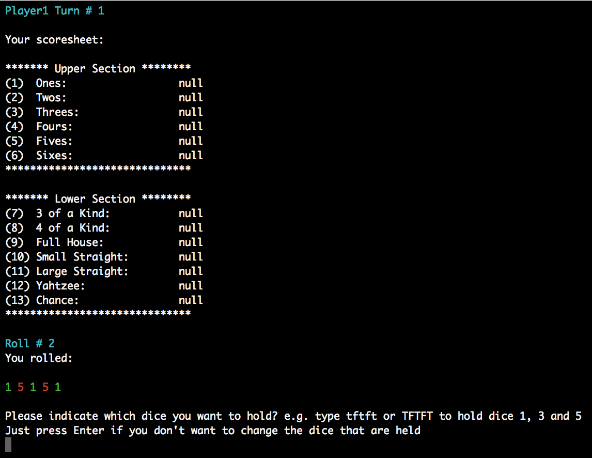
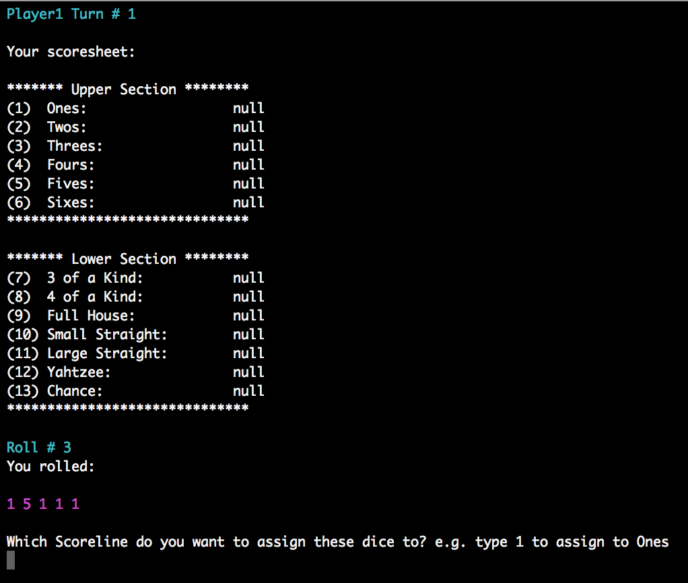
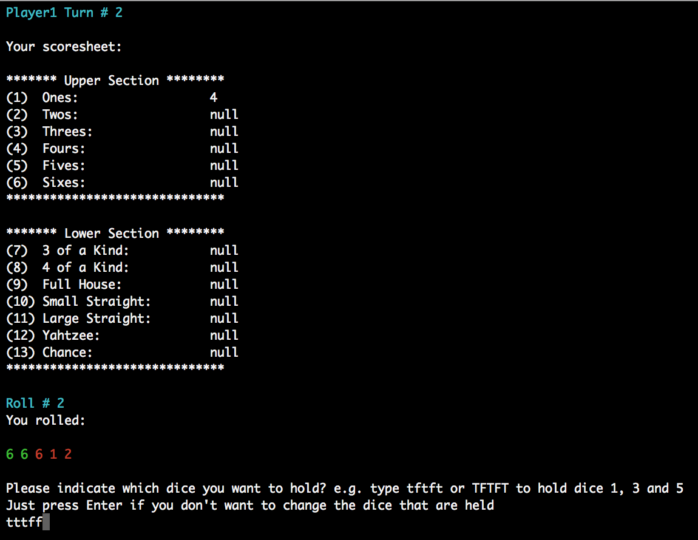
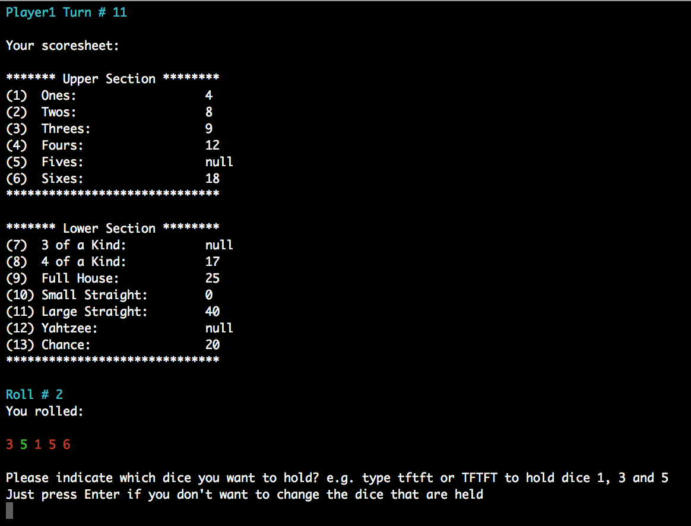
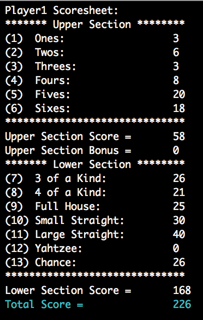

Project 2 - Java - Individual Project
I have now completed the second project on the course!
I am not able to host this project since it is mainly a back-end Java project with a console app front-end
The code for the project can be downloaded from the GitHub repositry (link below) and the project can be built and run in a standard terminal window on a Mac (some of the code to make the app run in a terminal window is specific to Mac terminal sessions)
The Project Week
On Thursday 25th January we were given the different projects that we could choose from along with the brief for each project.
Some of the projects were based on creating only Java back-end code and some were based on creating back-end code and an Android front-end. The back-end only projects had more complicated logic to be implemented. We were also allowed to make changes to the supplied briefs for the suggested projects and we were also allowed to come up with our own project ideas, for which we were to write our own breif
The projects that we could choose from were as follows:
- To-do List
- Card Game
- Jurrasic Park
- Food Tracker
- Fruit Machine
I chose not to use any of the suggested project ideas and instead decided to create my own project brief, which was based around creating a Yahtzee game
The reason that I chose a Yahtzee game as a project was because I wanted to create a Java app that was mostly back-end based and with a lot of logic to implement so that I could practice coding logic in Java.
The full brief that I came up with for the project can be found in the Readme section of the GitHub repository for the project here: Project Brief
I started planning my project on Friday 26th January. Since the MVP for the project did not include a front-end I concentrated on planning the classes that I would require to implement the back-end.
I then started working on the actual code over the weekend and continued working on it throughout the week. I had completd the MVP on the Tuesday afternoon, so I then started working on the extensions on Wednesday. I initially worked on implementing a basic console app front-end so that I could see the results of running the game properly. I then worked on the logic for the lower part of the Yahtzee score sheet, which was the second extension. I then finished off the coding by making some improvements to the console app.
I then worked on the presentation for the project on Thursday afternoon.
On Friday 2nd February the cohort all gathered with the instructors to each present our applications and give some details of how we approached the project. We were each given 10 minutes to present and 5 minutes of question time, so with 20 students, this took up the whole day. As with the first project, it was great to see the variety of apps that everyone had produced and to see the different approaches everyone had taken.
Below are some screen-shots of the console app running in a Terminal window on a Mac
|  |  |  |
|  |  |  |
GitHub Links
All of the source code files that I created throughout the project can be viewed on GitHub: